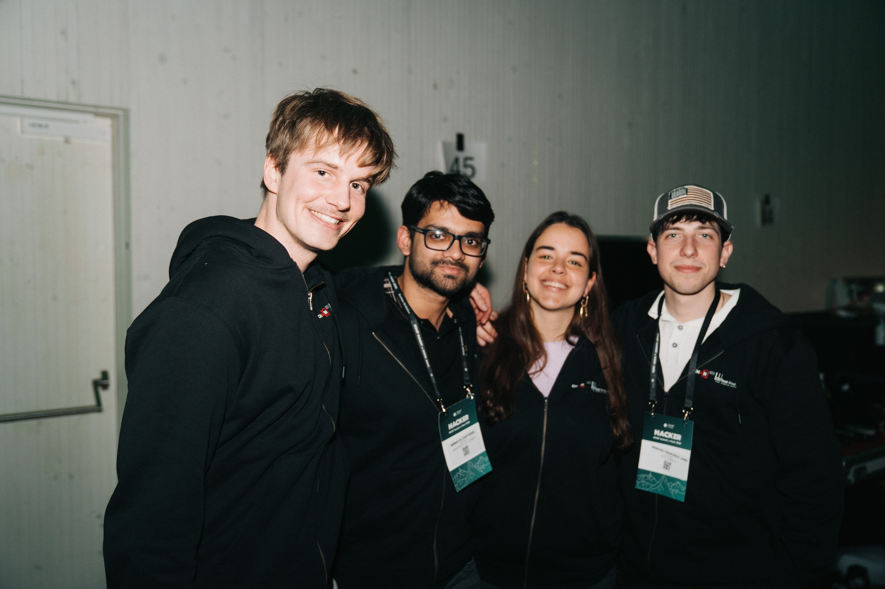
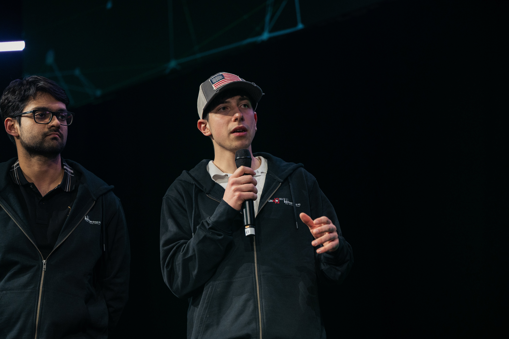

We Won START Hack 2026 with AuditChain: Fuzzy Logic, Metaflow, and an Audit-Ready Procurement Agent
At START Hack 2026, Casimir Rönnlöf, Debmalya Chatterjee, Maria Francisca Ramos and I had 36 hours to build something that could survive both a live demo and an uncomfortable amount of scrutiny from people who actually understand enterprise procurement. We somehow managed to do both, which was already a win before we learned we had actually won.
The challenge came from Chain IQ Group AG: take a procurement request written in plain text, help the customer place the order, simplify the workflow, and still keep the process auditable and defensible. That sounds easy until you remember procurement is really a machine for turning ambiguity into accountability. "30 chairs in Zurich, budget around 20k, soon please" is not a clean input. It is a future argument waiting to happen.
Our answer was AuditChain, an autonomous procurement decision engine designed around one very stubborn rule: the LLM can parse and explain, but it does not decide. The decision path itself stays deterministic, logged, replayable, and intentionally annoying to bypass.

The Problem We Actually Solved
Most "AI for business workflow" demos quietly smuggle the hard part under the carpet. They show a polished chatbot, maybe a pretty explanation, and then hand-wave the moment where the system is supposed to apply actual policy. Procurement is where that approach dies immediately.
We needed a system that could:
- accept messy free-text procurement requests,
- extract structured fields without hallucinating authority,
- apply real procurement rules deterministically,
- rank suppliers transparently,
- escalate when uncertainty becomes dangerous,
- and leave behind an audit trail a regulator or internal reviewer could reconstruct months later.
That last part was the differentiator. Plenty of systems can say "approve." Much fewer can show exactly why, with the same answer tomorrow, and defend it when the stakes are not just technical but financial and regulatory.
What We Built
The product was a sourcing agent with a clean separation of responsibilities:
free-text request
-> parse with LLM
-> validate missing fields
-> apply deterministic policy rules
-> filter eligible suppliers
-> score and rank suppliers
-> run fuzzy reasoning on borderline cases
-> decide approve / escalate / reject
-> generate narrative explanation
-> persist full audit trailThe architecture from the solution repo is deliberate. The frontend is React 18 + TypeScript + Tailwind + Vite. The API layer is FastAPI. The data layer is append-oriented SQLite/PostgreSQL. The observability layer uses Metaflow for visual pipeline tracking and card-based DAG inspection. The interesting point is that the flashy part is not the model call; the flashy part is that almost everything important happens outside it.
| Layer | What it does | Why it mattered |
|---|---|---|
| LLM parse + narrative | Turns messy text into structured fields, then writes a human-readable explanation after the decision is locked. | We got flexibility without letting the model become the legal brain of the system. |
| Deterministic policy engine | Checks spending authority, supplier restrictions, geography, compliance and threshold rules. | Reproducibility and auditability were non-negotiable. |
| Fuzzy reasoning layer | Handles borderline thresholds, unstable rankings and uncertainty signals. | Real procurement is full of near-boundary cases that hard thresholds handle badly. |
| Metaflow observability | Tracks steps, artifacts and visual DAG runs. | Debugging under hackathon time pressure becomes much easier when the pipeline is inspectable. |
Why Fuzzy Logic Ended Up Being the Right Call
This was the most personally satisfying part for me. I had already explored fuzzy logic in my bachelor-thesis context because I liked one property of it very much: it refuses to pretend the world is cleaner than it is. A budget of 99,999 and a budget of 100,001 do not suddenly belong to different universes just because a threshold says so.
In AuditChain, fuzzy reasoning helped in three places:
- threshold classification for borderline approval tiers,
- supplier scoring when multiple dimensions interact non-linearly,
- confidence gating when a result looks technically valid but still too fragile to auto-approve.
The nice thing is that this was not just hackathon theatre. The 2025 Scientific Reports paper on procurement evaluation using FAHP and TOPSIS reinforces the same underlying intuition: procurement decisions often contain linguistic uncertainty, conflicting criteria, and subjective expert judgments that are poorly served by brittle crisp thresholds alone. Their setting is power-enterprise procurement, not our exact hackathon pipeline, and we did not implement their FAHP-TOPSIS framework one-to-one. But the methodological direction is the same and, honestly, it was reassuring to see that instinct validated in a procurement-specific paper a few months later.
What we implemented was more pragmatic and product-shaped: deterministic rules first, then fuzzy overlays for borderline budgets, ranking instability, missing information, narrow score gaps, and escalation logic. In other words: keep the system strict where it must be strict, and nuanced where reality is actually nuanced.
Architecture Details From the Real Solution
The local solution repo already tells the story well, so we kept the public explanation grounded in that actual implementation rather than rewriting history after the prize ceremony.
The backend pipeline covered thirteen steps, with only two LLM-assisted stages: parsing and the final narrative explanation. The remaining stages were deterministic: validation, policy checks, supplier filtering, weighted scoring, fuzzy scoring, confidence gating, risk scoring, AIS computation, and persistence. That split was crucial. If you remove the model, the system becomes less friendly, but it does not become less principled.
On the observability side, Metaflow gave us a visual DAG plus artifact tracking, which is exactly the kind of thing you want when different people in the team are simultaneously touching logic, data, prompts and UX. Instead of asking "what happened?", we could inspect the run.


Azure, Metaflow, and the Multi-Connection Story
One thing I liked about our setup is that it was not a toy localhost-only architecture dressed up as production. The repo contains both a docker-compose.yml for local orchestration and Azure-facing proxy configs that make the deployment shape very explicit.
The frontend Nginx config proxies /api/ to an Azure Container Apps endpoint, while the Metaflow UI frontend proxies to a separate Azure-hosted Metaflow UI backend. The Metaflow proxy config also handles upgraded connections and longer read timeouts, which matters when the UI is talking to pipeline state and artifact views instead of just serving static files. In practice, this meant we could reason about the system as multiple live connections held together intentionally, not accidentally: browser to frontend, frontend to API, frontend to Metaflow UI backend, API to data and flow state.
That separation paid off twice. First, during development, because local Docker Compose let us spin the whole stack and inspect failures fast. Second, in the Azure-oriented setup, because the service boundaries were already clean enough to map onto distinct endpoints without rewriting the product architecture under pressure.
What I Think Won It
Not the buzzwords. Everyone at a good hackathon can say "LLM", "agent", "copilot", "multi-agent", "enterprise". Those words have become decorative.
I think what helped us was this combination:
- we kept the decision loop legible,
- we treated auditability as a product feature rather than an afterthought,
- we used fuzzy logic where hard thresholds become silly,
- and we built enough observability that we could actually debug the thing under time pressure.
Also, the team was genuinely fun to work with. That matters more than people admit. Hackathons are short enough that morale is basically a system dependency.
What I Took Away Personally
This project confirmed a belief I already had: the future of applied AI in serious workflows is not "let the model freestyle." It is structured systems that know exactly where model flexibility helps and where it becomes liability.
It also reminded me that some ideas only become convincing after you put them under pressure. Fuzzy logic had been one of those ideas for me. I liked it intellectually before. I trust it much more after seeing how naturally it fits the ugly edges of procurement-style decisions.
And yes, winning was great. But the deeper satisfaction was looking at the system afterward and thinking: this is not just a demo that passed. This is a design direction I would happily keep building.